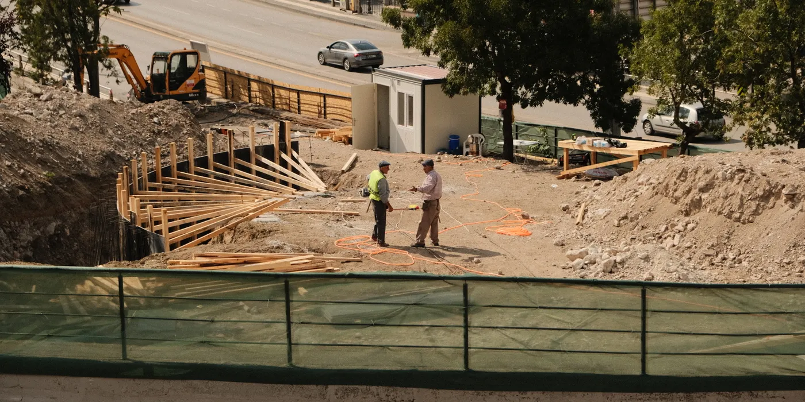
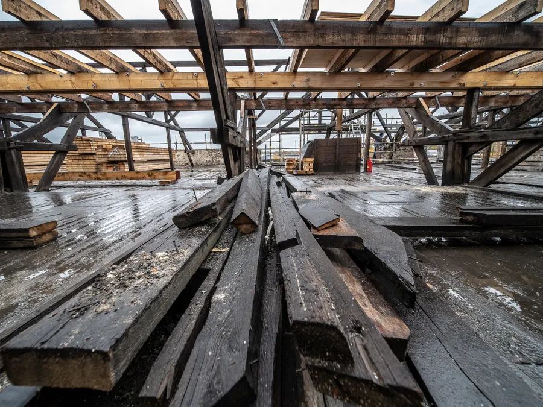

Tillbyggnad och utbyggnad · Stockholm
Tillbyggnad med fast pris och bygglovshjälp
19 000–28 000 kr/m² och 8–16 veckors byggtid. Vi tar skiss, bygglov, grund, stomme, tak, fasad och inredning med samma lag från första besiktning till slutbesiktning.
Ett rum till som hänger ihop med huset
Vi bygger till med samma stomme, takfall och fasad som huset du redan har. Resultatet blir en yta som sitter ihop med bostaden, inte en låda som står bredvid.
En tillbyggnad på 15–45 m² löser oftast behovet av ett vardagsrum, ett sovrum eller en matplats i markplan. Vi börjar med att mäta upp tomten och kontrollera hur grunden, takfallet och dagvattnet ser ut. Sedan ritar vi en skiss som visar var väggarna hamnar, hur fönstren sitter och var el och VVS ska dras. Du får ett skriftligt förslag med fast pris inom 24 timmar på vardagar.
En konstruktör räknar på balkar och infästningar innan vi sätter spaden i jorden. Vi läser detaljplanen för din fastighet och skickar in bygglov och bygganmälan till stadsbyggnadskontoret i din stadsdel. Grund, stomme, tak, fasad, fönster, el och VVS görs av samma lag som du träffar på besiktningen, så du slipper hålla reda på underentreprenörer.
Under 15 m² blir kvadratmeterpriset högre, eftersom grund och tak kostar nästan lika mycket oavsett ytan.
Byggtiden räknas från första spadtaget. Bygglovets handläggning löper parallellt och läggs inte ovanpå veckorna.
Intervall efter besiktning. Sedan lämnar vi fast pris på hela entreprenaden, skrivet i avtalet innan arbetet börjar.
Vad som ingår
Allt nedan ligger i entreprenaden när vi sätter fast pris. Du behöver inte beställa något av någon annan.
- Bygglov och bygganmälan, inklusive situationsplan och fasadritning
- Konstruktionsberäkning för balkar, bjälklag och infästningar
- Grundläggning med plintar eller betongplatta och dränering
- Stomme i tryckimpregnerat och konstruktionsvirke
- Tak med underlagspapp, råspont och samma täckning som huvudhuset
- Fasad som matchar husets panel, puts eller tegel
- Fönster och dörrar, levererade och monterade med foder
- Invändig inredning: gips, spackling, målning, golv och lister
- El och VVS av behörig installatör, med egna grupper i proppskåpet

Det här ingår inte. Bygglovsavgiften betalar du direkt till stadsbyggnadskontoret. Vill du rita själv med egen arkitekt gör vi det gärna, men då ligger arkitektarvodet utanför vårt pris. Kök, badrum och garderober utöver vår standardlista räknas som tillval.
Flytt av träd, staket eller planteringar, ny elservis om nätägaren kräver det, och marklov för murar ingår inte heller. Alla tillval beställer du skriftligt innan vi utför dem, så du alltid vet vad de kostar.
Tidsplan för en tillbyggnad på 28 m²
Räkneexemplet är en tillbyggnad på 28 m² i Solna: 690 000 kr och 11 veckor byggtid. Så här fördelar sig veckorna innan dess.
-
Steg 1
Besiktning och skiss
Vi mäter upp tomten, kontrollerar grund och takfall och går igenom detaljplanen. Du får skiss och skriftligt förslag med fast pris.
-
Steg 2
Bygglov och bygganmälan
Konstruktören räknar på stommen och vi skickar in ansökan till stadsbyggnadskontoret. Handläggningen löper parallellt med planeringen.
-
Steg 3
Grund, stomme och tätt hus
Schakt, platta, regelstomme, tak och fönster på plats. El och VVS dras medan väggarna fortfarande är öppna.
-
Steg 4
Inredning och slutbesiktning
Gips, målning, golv och lister. Sedan slutkontroll av el och VVS, genomgång med dig och åtgärd av eventuella anmärkningar.
Kostnadsintervall
Priset sätts per kvadratmeter byggnadsarea och beror på grundförhållanden, takform och standard. Siffrorna gäller Stockholm 2026 och är utan moms.
- Enkel standard19 000–22 000 kr/m²
- Standard22 000–25 000 kr/m²
- Högre standard25 000–28 000 kr/m²
- Tillval: badrum i tillbyggnaden17 000–30 000 kr/m²
Enkel standard är färdig yta med målade gipsväggar, laminatgolv, standardfönster och klinker i hallen. Högre standard betyder bland annat större glaspartier, parkett, takvärme vid entrén och specialsnickeri som bänk eller garderob. Skillnaden mellan nivåerna ligger i material och detaljer, inte i stommen.
Efter besiktningen lämnar vi fast pris på hela entreprenaden. Du ser varje post: grund, stomme, tak, fasad, el, VVS och inredning. Ändringar beställs skriftligt innan de utförs, så priset inte glider.
| Yta | Låg nivå, 19 000 kr/m² | Hög nivå, 28 000 kr/m² |
|---|---|---|
| 15 m² | 285 000 kr | 420 000 kr |
| 20 m² | 380 000 kr | 560 000 kr |
| 25 m² | 475 000 kr | 700 000 kr |
| 28 m² | 532 000 kr | 784 000 kr |
| 45 m² | 855 000 kr | 1 260 000 kr |
Tabellen visar intervallets ändpunkter per yta, utan moms. Räkneexemplet på 28 m² i Solna landade på 690 000 kr och 11 veckors byggtid. Efter besiktning lämnar vi fast pris.
Så gör vi
Du får namngivna personer i stället för en växel, och en arbetsledare som svarar på frågor under hela bygget.
Mikael Lindqvist besiktigar, ritar upp och sätter fast pris. Han är byggmästare och har 28 år i branschen. På bygget får du en namngiven arbetsledare: Sara Öberg håller i våtrum och tätskikt, Johan Reyes i stommar, inredning och trappor.
Varje fredag får du en kort rapport om vad som blev klart och vad som händer nästa vecka. Vill du ändra något skriver vi en ändringsbeställning med pris och tid innan vi utför arbetet. Fast pris betyder fast pris.
Två veckor innan start får grannarna ett brev om arbetet. Vi sätter byggstaket runt området, skyddar trädgården med körplåtar och städar efter oss. Anmärkningar från slutbesiktningen åtgärdas utan extra kostnad.
- F-skatt sedan 2004 och ID06 på alla som är på bygget
- Kollektivavtal med Byggnads
- Ansvarsförsäkring hos Trygg-Hansa, 10 000 000 kr
- Säkra Vatten-certifierad våtrumshantverkare
- Elmoment med registrerad elinstallatör
- Besiktning bokad inom 5 arbetsdagar
- Skriftligt förslag inom 24 timmar på vardagar
- 5 års garanti på utfört arbete enligt AB 04
- Jour vardagar 17:00–21:00 för pågående projekt
Frågor om tillbyggnad
Tre frågor vi får på nästan varje besiktning.
Behöver jag bygglov?
Ja, en tillbyggnad kräver bygglov i nästan alla fall, och alltid en bygganmälan. Vi tar fram situationsplan, fasadritning och konstruktionsberäkning och skickar in ansökan till stadsbyggnadskontoret i din stadsdel.
I vissa områden med detaljplan kan attefallsreglerna ge undantag för en mindre tillbyggnad. Vi läser detaljplanen på besiktningen och säger till innan du betalar något om det finns en genväg.
Kan vi bo kvar under bygget?
Ja, i de flesta fall. Vi bygger utifrån och håller den nya ytan avstängd från bostaden tills den är tät. Den dag el och VVS kopplas in behöver vi komma åt båda sidor, och vattnet stängs av i högst en arbetsdag.
Vi arbetar vardagar 07:00–17:00 och städar undan efter varje arbetsdag. Dammiga moment som slipning lägger vi så tidigt som möjligt på dagen.
Vad kostar en tillbyggnad på 25 m²?
Med 19 000–28 000 kr/m² blir en tillbyggnad på 25 m² 475 000–700 000 kr utan moms, och byggtiden ligger på 8–16 veckor. Räkneexemplet på 28 m² i Solna landade på 690 000 kr och 11 veckor.
Grundförhållanden, takform och standard avgör var i intervallet du hamnar. Efter besiktning lämnar vi fast pris på hela entreprenaden.
Andra tjänster
Passar inte en tillbyggnad just nu? De här tre tjänsterna byggs av samma lag, med samma tidplan och samma fem års garanti.
Skicka in din tomt och dina mått
Beskriv ytan du vill bygga till och vad den ska användas till. Vi bokar en kostnadsfri besiktning inom 5 arbetsdagar och lämnar skriftligt förslag med fast pris inom 24 timmar på vardagar.
312 projekt i Stockholmsområdet sedan 2004 · 5 års garanti enligt AB 04 · 4,8 av 5 över 63 omdömen